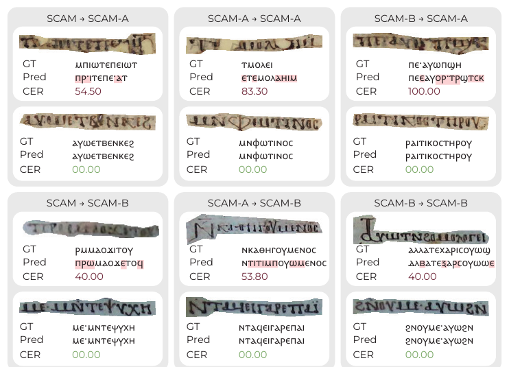

ICDAR 2026
Paper, arXiv and dataset links will be added upon publication.
We target Handwritten Text Recognition (HTR) in low-resource scenarios, which arise from underrepresented languages, rare scripts, and the degraded visual conditions typical of historical documents. We introduce SCAM (Sahidic Coptic Ancient Manuscripts), a new line-level dataset built from digitized ancient manuscripts written in the extinct Sahidic Coptic dialect. The dataset reflects a realistic and challenging setting, as it combines heterogeneous acquisition conditions across libraries with typical manuscript degradations such as ink fading, bleed-through, and material deterioration. Beyond visual complexity, SCAM poses significant linguistic challenges due to the scarcity of resources for Sahidic Coptic, its uncommon alphabet, and dialect-specific diacritics. To support research in low-resource HTR, we benchmark several state-of-the-art approaches based on different paradigms, highlighting their limitations and strengths, and underlining the gap between current HTR performance on well-resourced modern scripts and historically grounded, low-resource scenarios.
SCAM contains lines from 27 leaves (53 pages) of a single-author manuscript known as Coptic Literary Manuscript (CLM) 359, dated to 1002–1003 C.E. and originating from the White Monastery in Upper Egypt. Only 49 leaves of the original codex are known to have survived, now spread across libraries and institutions worldwide and digitized under highly different conditions. Lines are isolated with polygon annotations (rather than bounding boxes) to handle slanted lines and the ornate paragraph-initial letters typical of the script.
Although both subsets come from the same single-author manuscript, the difference in preservation and digitization induces a measurable domain gap. We quantify the visual gap with FID/KID and the handwriting-style gap with HWD, and the linguistic gap with the Jensen–Shannon divergence of character n-grams. Grayscale conversion narrows — but does not close — the visual gap.
| SCAM-A ↔ SCAM-B | FID ↓ | KID ↓ | HWD ↓ | JSD ↓ |
|---|---|---|---|---|
| RGB images | 113.62 | 0.13 | 1.06 | 0.49 |
| Grayscale images | 65.06 | 0.07 | 1.04 |
Lower is more similar. HWD values in 0–1.5 are typical of same-author sets, consistent with SCAM being a single-author manuscript.
We benchmark 11 HTR models across CTC, sequence-to-sequence attention, and Transformer paradigms, reporting Character Error Rate (CER) and Sequence Error Rate (SER). The table below reports models trained on the full SCAM training set and tested on the whole test set and on each subset.
| Model | SCAM | SCAM-A | SCAM-B | |||
|---|---|---|---|---|---|---|
| CER ↓ | SER ↓ | CER ↓ | SER ↓ | CER ↓ | SER ↓ | |
| CRNN | 9.47 | 49.79 | 9.00 | 51.54 | 9.85 | 48.38 |
| C-SAN | 88.06 | 100.00 | 87.52 | 100.00 | 88.50 | 100.00 |
| VAN | 5.25 | 31.99 | 5.96 | 36.15 | 4.68 | 28.65 |
| HTR-VT | 10.27 | 59.62 | 10.98 | 66.54 | 9.70 | 54.05 |
| Kang et al. | 11.43 | 54.18 | 11.44 | 57.69 | 11.42 | 51.35 |
| Michael et al. | 33.35 | 91.16 | 36.19 | 95.39 | 31.07 | 87.76 |
| LT | 22.59 | 78.74 | 21.86 | 78.85 | 23.18 | 78.65 |
| VLT | 15.03 | 62.81 | 14.89 | 67.31 | 15.15 | 59.19 |
| TrOCR-S | 13.12 | 65.99 | 17.04 | 86.87 | 9.96 | 49.20 |
| TrOCR-B | 12.42 | 74.39 | 14.42 | 77.78 | 10.81 | 71.66 |
| TrOCR-L | 11.33 | 72.63 | 12.82 | 74.50 | 10.14 | 71.12 |
Trained on the full SCAM training set. ★ marks the best model (VAN). Lower is better.

Qualitative results of the best model (VAN) across Train → Test setups. Errors are highlighted in red; per-line CER is reported. SER stays high even at low CER — a direct consequence of scriptio continua, where a single character error fails the whole line.
@inproceedings{quattrini2026scam,
title = {A Text Recognition Dataset from Sahidic Coptic Ancient Manuscripts},
author = {Quattrini, Fabio and Zaccagnino, Carmine and Bianchi, Costanza
and Cascianelli, Silvia and Cucchiara, Rita},
booktitle = {International Conference on Document Analysis and Recognition (ICDAR)},
year = {2026}
}